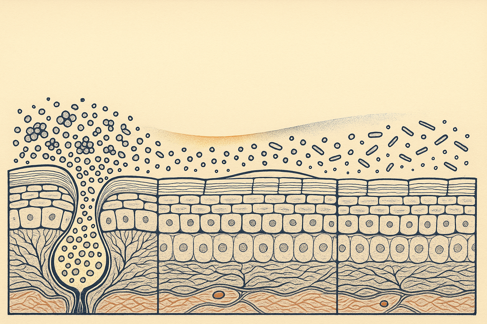
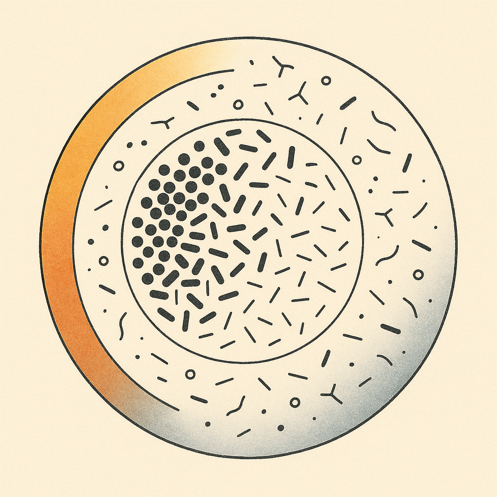
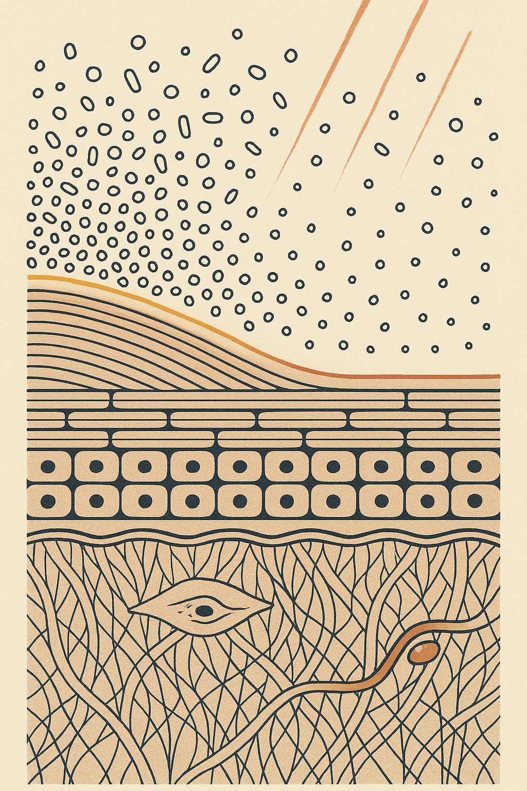

Review below. Reply approve to publish the Facebook post, or tell me edits.

Your skin is not sterile. It was never meant to be. About a trillion organisms live on it right now, and most skincare advice treats them like dirt.
A trillion organisms. Not a threat.
The proper term is the skin microbiome. Stripped of the jargon, it means this: the community of bacteria, fungi and yeasts that live on your skin surface. They are not contamination. They are part of the barrier itself, as much a feature of healthy skin as the oils and lipids around them.
Most skincare marketing treats the skin surface as something to be cleaned, corrected and controlled. The science increasingly says the opposite: your face is a habitat, and the smartest thing you can do for it is often less.
A few resident families do most of the work. Cutibacterium thrives in oily zones like the T-zone, feeding on sebum. Staphylococcus epidermidis lives broadly across the skin and is one of its most reliable long-term tenants. Malassezia yeasts are found almost everywhere on almost everyone.
Here is the part that changes how you look at your own face: it is not one habitat. Your forehead and nose are oily terrain, so they host dense, sebum-loving communities. Your cheeks are drier ground, so they carry a sparser, different mix. Same face, different ecosystems. That is a real part of why your T-zone and your cheeks so often behave like they belong to two different people.
A balanced microbiome earns its keep in three ways.
First, it crowds out unwanted organisms. Resident microbes occupy the space and consume the resources that less friendly ones would otherwise use. A full house is a defended house.
Second, it helps produce and maintain the acid mantle. Healthy skin surface sits at a pH of roughly 4.5 to 5.5, slightly acidic, and that acidity is protective. Your resident microbes both prefer that environment and help sustain it.
Third, it helps train local immune responses. Skin that has grown up alongside a stable community tends to be less reactive, less quick to flare at every new input.
None of this is visible. All of it matters.
You do not need anything exotic to disrupt this system. Ordinary habits do it quietly.
High-pH cleansers and hard water push the surface pH up toward neutral or alkaline, which is comfortable for the wrong organisms and uncomfortable for the right ones. Double cleansing twice a day when you did not wear makeup strips lipids the community depends on. Scrubs and acids stacked back to back do the same, faster. Long hot showers in winter. Sanitising wipes near the face. Each one is small. Together they add up.
The symptom picture is familiar: skin that feels tight after washing, stinging from products that never used to sting, flaring that starts on the cheeks first, the drier habitat with the least buffer.
One honest caveat. "Microbiome damage" gets used loosely in marketing, and the science here is still young. The association between over-cleansing, raised pH and irritated, reactive skin is well documented. Precise cause and effect for any individual product is not. Anyone telling you a specific cream "restores your microbiome" is ahead of the evidence.
The fix is mostly subtractive. Doing less, better.
Lower the pH of your cleanse: a pH-balanced, non-foaming or gently foaming cleanser instead of anything that squeaks. Cleanse properly once at night, and if your skin runs dry, a plain water rinse in the morning is enough. Stop stacking exfoliants; pick one and use it sparingly. Keep lipids on board with a moisturiser built around ceramides, cholesterol and fatty acids, the same materials your barrier is made of. And do not sanitise your face. Ever.
None of it photographs well. It just works, quietly, over months.
Now the honest part about what we make.
Red light at 630 nm is not an antimicrobial treatment, and we are not going to claim it reshapes your microbiome. It does not.
Its genuine advantage in this conversation is simpler: it is a non-stripping, non-irritating step. Ten minutes under red light does not raise your surface pH, does not remove lipids, does not exfoliate anything. For someone whose skin is already inflamed from doing too much, a step that adds nothing to the skin surface is a feature, not a limitation.
Blue light around 460 nm is being studied for its effect on certain skin bacteria, and it is a genuinely interesting research area. But we do not make treatment claims for acne, and no home device is a substitute for medical care if your skin needs it.
For the record, because we would rather say it than have you find out later: our mask is a cosmetic device, not medicine. It uses visible light only, no near-infrared, and we have not published measured irradiance figures. We are a new brand still earning our reviews, and we will not invent any. And sunscreen will do more for your skin's long-term health than anything we sell.
For the microbiome, not in the way the word "work" usually implies. Nothing about ten minutes of visible light rebuilds a bacterial community. What it can do is occupy the slot in your routine that a scrub or a second cleanse used to occupy, without taking anything off the surface. That is a modest claim, and it is the honest one.
Skin longevity is partly about protecting a living system you cannot see. Which means the smartest routines usually get shorter over time, not longer. Fewer actives, gentler cleansing, more respect for the trillion quiet residents doing their jobs.
Your face is an ecosystem. Treat it like one.
What is the one thing you cut from your routine that your skin actually liked?
If you ever want a closer look at the mask, it is here.

There are about a trillion organisms living on your skin right now.
Most skincare advice treats them like dirt.
Squeaky clean is not clean. It is stripped.
That community of bacteria and yeasts is your skin microbiome, and it is part of your barrier, not something sitting on top of it. The one fact worth keeping: healthy skin is slightly acidic, around pH 4.5 to 5.5, and that acidity is protective. Most bar soaps and squeaky foaming cleansers sit well above it. Skin recovers, but strip it twice a day, every day, and it spends its life catching up. New stinging is usually a routine problem, not a skin-type problem.
The honest fix is subtractive: one proper cleanse at night, water in the morning if you are dry, fewer exfoliants, keep the ceramides.
Our lane, stated plainly: red light is not an antimicrobial treatment, and the point is what it does not do. It does not raise surface pH, strip lipids or exfoliate. Cosmetic device, not medicine, and SPF still does more than anything we sell.
Be honest: do you double cleanse even on a no-makeup day?
If you want a closer look at the mask, it is here: https://redermis.com.au/products/red-light-therapy-face-neck-mask
#skinmicrobiome #skinbarrier #skincarescience
IMAGE PROMPT: Editorial science illustration in the style of New Scientist: one iconic circular habitat-map diagram on cream paper. A single large circle divided by fine charcoal linework into an oily central territory and a surrounding drier territory, each populated at visibly different densities with simple accurate microbial glyphs, dense clustered cocci and short rods packed over the oily zone, sparse scattered forms over the dry zone. A fine outer ring gradient shifts from warm acid amber on one arc to cool alkaline slate on the other. Flat vector-adjacent style, precise thin charcoal linework, generous negative space, cream ground, charcoal and terracotta with one red accent, bold high-contrast shapes readable at 150px. No brick wall, no peeling sheet, no text, no numbers, no labels, no faces, no people, no product, no device.

Squeaky clean is not clean. It is stripped.
About a trillion organisms live on your skin right now. They are not dirt. They are the microbiome, and most of your routine either supports it or scrubs it off.
Some facts worth saving:
Your skin surface sits around pH 4.5 to 5.5. Slightly acidic on purpose. That acid mantle is part of your defence, not a flaw to correct.
If your face feels tight after cleansing, something took more than it needed to.
New stinging is usually the routine, not your skin type.
The fix is subtractive. One gentle cleanse at night. No stacked exfoliants. Keep the lipids on.
And the honest bit: red light will not fix a microbiome, and we will not pretend it does. It just does not strip anything. This is a cosmetic device, not medicine, and SPF still does more than anything we sell. We are new and still earning our reviews.
What did you cut from your routine that your skin actually liked?
Mask is in the bio if you want a closer look.
#skinbarrier #skinmicrobiome #redlighttherapy #ledmask #skincareaustralia #skincarescience
IMAGE PROMPT: Editorial conceptual science illustration in the style of Scientific American and Quanta, vertical 4:5. Lower two thirds: a histologically accurate skin cross-section on bone-cream paper, stratum corneum drawn as flattened corneocyte bricks bound by fine parallel lipid-lamellae mortar, differentiated living epidermis with one nucleus per cell, basement membrane, and a woven collagen dermis carrying one spindle fibroblast and one capillary loop. Upper third: an open field of simple microbial glyphs, small circles, short rounded rods and tiny clusters, packed densely at one side over a slightly oilier ridge and thinning to a sparse scatter at the other. One fine luminous amber line along the surface marks the acid mantle. A few thin parallel warm-red rays enter from the top edge and pass through the glyph field without disturbing it. Flat vector-adjacent, precise thin charcoal linework, restrained cream, terracotta and charcoal palette with one red accent. No hair follicle, no sebaceous gland, no text, no labels, no faces, no people, no product, no device.
## Title
Why Over-Cleansing Backfires: Your Skin Microbiome, Explained
## Description
Your face hosts about a trillion microbes, part of your barrier, not dirt. 1. Healthy skin sits at pH 4.5 to 5.5, slightly acidic on purpose. 2. Tight and squeaky after washing is stripped, not clean. 3. The fix is subtractive: one gentle cleanse at night, fewer stacked exfoliants, keep the ceramides. 4. Red light is not antimicrobial; its advantage is no stripping, no exfoliating, no pH change. It will not fix your microbiome on its own. Cosmetic device, not medicine.
## Hashtags
#skinmicrobiome #redlighttherapy #ledfacemask #skincarescience #skinbarrier
Note: this pin reuses the Instagram image. Outbound link: https://redermis.com.au/products/red-light-therapy-face-neck-mask